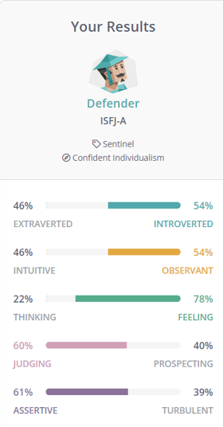
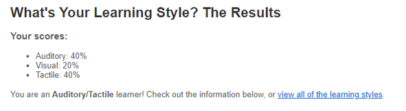
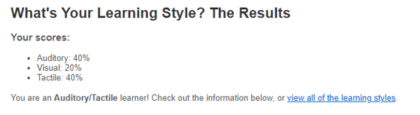

https://github.com/vraysa/assignment-1
S3902063@student.rmit.edu.au
Aryan Verma
Personal Info
Hi! I am Aryan or ary for short :D I am born and raised in Melbourne with an Indian background and this is my first year at RMIT, undertaking a Bachelor of Information Technology. I chose to study at RMIT since I have heard it is a credible campus, its location in the city is not too far away from me and is easily accessible by public transport, I have already met a bunch of great people at RMIT, so I am glad I chose it. I speak English, Punjabi, and some Hindi. I have a pet rainbow lorikeet called Gangaram which I have had since I was a year old! I am extremely passionate about playing volleyball and spend most of my pastime playing it, however I also do enjoy hanging out with my friends and playing video games, I enjoy fps and Minecraft.
Intrest In IT
My interest in IT begun in year 10 of high school, when we had to pick electives and I asked my cousin what some good fun electives would be, he clearly told me that all electives are fun however an IT elective would completely be new to me and it would also be enjoyable due to the vast amounts fields and learning possible in IT. This sparked my interest in IT and here I am pursuing this interest! I have coded websites before using brackets and I am comfortable using HTML and CSS. In my last year of high school, I picked up the software development subject and throughout the year coded many projects however my biggest project was to create a lunch order system which used databases to store product and user information. I chose to come to RMIT due to the credibility as a great university for IT, it is also very accessible, and I hope to meet new people at RMIT who I can vibe with. I expect to understand the mechanics of IT slowly and steadily, I expect to know how data interacts with networks and how users can interact with a computer to produce certain outcomes.
Ideal Job

The information technology system administrator position appeals to me since it revolves around troubleshooting IT related problems, which I believe I would be qualified for once I complete the Bachelor’s Degree. What further appeals to me is the location as it is in the western suburbs, meaning I will not have to travel very far to access work.
To be a qualified IT system administrator at TALENT, an individual requires experience in administrating and managing an Information Technology Infrastructure Library environment (ITIL)and how to implement a ITIL process, extensive experience of Information Technology and software and hardware associated with it, extensive knowledge with Microsoft applications such as office365, MS Server and MS Active Directory. Finally, the individual requires solid knowledge on networking and understanding how computers share resources over digital interconnections.
I have a decent amount of knowledge on windows 10 and Microsoft applications such as office 365. I have a built PC’s, so I am comfortable with some of the hardware aspects.
I will build more experience by familiarising myself more with Microsoft cloud services to understand how computers interact with cloud service storages. Through this Bachelor’s degree I will further understand networking concepts, Information Technology Infrastructure Libraries and build server knowledge. I aim to get this experience through a mutual who works in the IT field and possibly some work experience there.
Personal Profile
Test results

 

What do the results of these tests mean for you?
These results portray to me that I am equally as introverted as I am extroverted. My observatory ability is almost equal with my intuition meaning I focus mainly on what is occurring, meaning I am extremely focused and practical however I believe I am also very curious and intuitive in many situations which I believe I am since sometimes I will use my curiosity to imagine the world ahead of me. The 78% in feeling portrays I am extremely empathetic which I believe I am however I also rely heavily on rationality and logic when making decisions. Given the 60% of judging shows that I assess situations ahead and will create back-up plans when needed and will disregard daily responsibilities to reach my end goal. I believe I am assertive; I am confident however not forceful or aggressive, I stand up for the people around me calmly avoiding aggression and upsetting other people.The 80 percentile of agreeableness means I am easy to agree with, meaning I respect other opinions and agree with them, rather than conflict since our decisions do not match. The emotional stability means that I can work under pressure and am not severely affected by stress.
How do you think these results may influence your behaviour in a team?I believe these results positively influence my behaviour in a team, I can open to fellow group members if they ever require help. I am extremely supportive, kind and will share knowledge and resources with my group members to ensure we are all able to reach the end goal of a project efficiently and effectively. I believe this also means I am extremely patient and reliable, suggesting that group members can rely on me if they ever require help, if I need to complete a section of a project or if a plan is needed for the project. Patience means I can work in long-term groups and will ensure that the end goal is completed by taking a steady approach to the situation. Since I am a auditory-tactile learner I believe I will be able to learn content quick, suggesting that if team members ever needed help with content I would be able to explain to them in a auditory way or tactically.
How should you take this into account when forming a team?I believe I should take this into account and find people who do not take advantage as my kindness, instead find people who appreciate it and create friends with them, since communication is key it allows me to connect with other people which allows me to work better with them, since I know their habits and their personality. I believe I can work well with everyone, if they do not betray my kindness, I believe I can empathise with everyone to work efficiently and effectively in a team.
Project Ideas
Overview
The project is a multi-functional volleyball application, which aims to target training and competitive games for volleyball players, coaches and managers who will use the app. The application will provide benefits to training, by having an in-built ‘training drills’ function which will display beneficial drills for specific roles. The application will also allow players to borrow volleyballs, by using a hire system, like a library where players can borrow a ball and return it when they need. However, the competitive aspect of the application will target the team fixtures and payments for games.
Motivation
This project will be useful to many individuals who also play volleyball or manage volleyball. I play volleyball, and in my experience, there are always troubles during training and game sessions, since there is no clear structure, this app will be designed to help create structure and give individuals a motive when training. Again, in my experience within my volleyball team 20% (2/10) people do not pay that session, meaning there are complications after with money, by using the app it will be easy to identify who has not paid and will ensure that payments are always given on time
Description
The multi-functional volleyball app will begin with a login page, where students can login and create accounts to access the features off the application. The login page will allow users to sign in using Gmail, Facebook, and Instagram, this will make the app more accessible and more efficient since users will not need to take their time into making an account, however, can choose to if they do not wish to sign in using other social media. Once logged in the users will be presented to a home screen, which will have four tabs at the bottom. These four tabs will represent different features of the app, the first tab will have a picture of a volleyball with text under it saying “Borrow a ball” this will allow individuals to borrow a ball similarly like borrowing a book, the users will be able to browse through the certain ball they want to borrow and will be able to click on the ball, opening a tab where users enter their personal information, and are given a date to return the ball by, balls which are in use by other users will be greyed out indicating that they are unavailable, and when clicked will show when the ball is available. The second tab will portray drills for different positions, showing multiple thumbnails of different volleyball training videos, the app will have an in-built video player which will show the video when clicked upon. The third tab will cover the fixtures of the season, there will be a button in the top right corner saying, “Add a team”, which will allow the user to register their team, this will be saved into the system database for the next time they use this app. Once the team is registered it will show who they are up against each week and will show the other brackets to see who is winning games, if the team has a bye, they will receive a “bye” bracket portrayed in grey to indicate that they are not playing next week. Finally, the last tab will record the payments of each players for each game, this tab will portray the team registered in their formation, similar to a FIFA squad builder, however instead of creating a line-up, this is used to portray who has paid and who has not, there will be a green trick beside the player who has paid and a red cross next to the player who has not. Players will be able to pay either through, Beem-it, PayPal, or credit card, if the player has not paid and the user clicks the red cross on the individual who has not paid it will portray text showing how much they require to pay.
Tools And Technologies
The software will require an in-built database which will ideally require a server of some sorts to manage the data each week, this database will be used for, storing user information such as their login details, personal information when borrowing balls, storing team information. This database should have high security and should be unbreachable since if user information is breached by an unauthorized source there will many ethical and legal problems. During the payment system, it must be ensured that their payment is safely authorized, and that their payment information is not breached since it violates the Data Privacy Act.
Skills Required
The skills required would be an advanced knowledge of how to code an application, thorough knowledge on databases. The application will be coded python; however a deep knowledge of python will be required to create these databases and connections to payment applications such as PayPal and Beem-it. An advanced level of python coding will allow for data to be accessed only by authorized users and will not be breached by outsiders. Given the timeframe, it cannot be feasible to gain years of python knowledge and advanced mechanics in a few months, however over a bigger timeframe it can be feasible.
Outcome
If the project is successful, it will allow many individuals who play volleyball to feel more confident and organised since they can rely on this application to handle payments, fixtures, borrow balls and advise good training drills, this will lead to more people who play volleyball feeling more organised since through the app there is an orderly way to approach all things volleyball related.